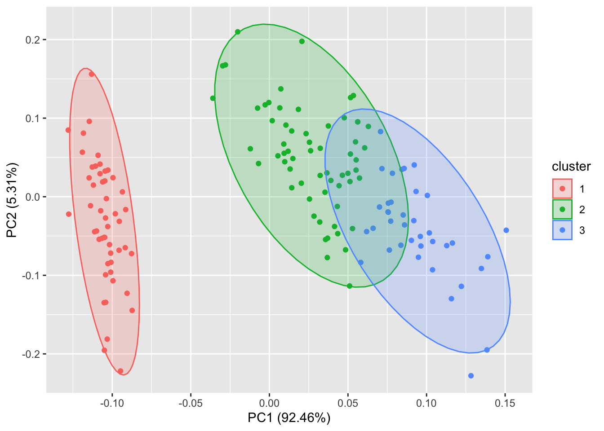

Show the code
knitr::opts_chunk$set(message=FALSE, warning=FALSE)knitr::opts_chunk$set(message=FALSE, warning=FALSE)ggfortify 是一个简单易用的R软件包，它可以仅仅使用一行代码来对许多受欢迎的R软件包结果进行二维可视化，这让统计学家以及数据科学家省去了许多繁琐和重复的过程，不用对结果进行任何处理就能以 ggplot 的风格画出好看的图，大大地提高了工作的效率。
接下来我将简单介绍一下怎么用 ggplot2 和 ggfortify 来很快地对PCA、聚类以及LFDA的结果进行可视化，然后将简单介绍用 ggfortify 来对时间序列进行快速可视化的方法。一下都是个人理解，
其实本包，大多数画图都是采用主成分（不包括因子分析）降维得到两个主成分，在进一步使其主成分为坐标，对应与每个点给出相应的颜色和类别
ggfortify 使 ggplot2 知道怎么诠释PCA对象。加载好 ggfortify 包之后, 你可以对stats::prcomp 和stats::princomp对象使用 ggplot2::autoplot。
autoplot()函数是ggplot2中的，不过ggfortify包里面有泛函s3类的autoplot解释这个函数
ggbiplot()函数中的参数就是autoplot()函数中的参数
autoplot(object, data = NULL, scale = 1, x = 1, y = 2, ...)
object : 对象
data : 对应的数据框
colour = 'Species' : 若有分类因子变量，可以对不同的类别添加颜色,当为连续值时为逐渐变色
shape = FALSE ： 调整点的形状，可以让所有的点消失，只留下标识（可以为具体的数字，就是形状类型）
main 、xlab 、ylab ： 标题
label = TRUE
label.size = 3 : 可以给每个点加上标识（以rownames为标准），也可以调整标识的大小.（默认为FALSE）
label.label : 标识标签（默认rownames）
label.colour : 文本标签的颜色
label.alpha ： 透明度
label.angle ： 旋转的角度
label.family : 字体
label.fontface
label.lineheight
label.hjust
label.vjust
label.repel
loadings = TRUE ： 可以很快地画出特征向量
loadings.colour = 'blue' ： 特征向量的颜色
loadings.label = TRUE ： 特征向量的标识(默认为特征向量的名字)
loadings.label.size = 3 ： 特征向量的大小
loadings.label.label :
loadings.label.colour
loadings.label.alpha
loadings.label.angle
loadings.label.family
loadings.label.fontface
loadings.label.lineheight
loadings.label.hjust
loadings.label.vjust
loadings.label.repel
frame = TRUE ： 可以把每个类圈出来。图中没有分类则看成一类，全部圈出来（支持 stats::kmeans 和 cluster::* 等等）
frame.colour = 'Species' : 对分类变量进行颜色标注，并把它们类别圈出来（类似colour = 'Species' ）
frame.type = 't' ： 选择圈的类型(默认多边形)
frame.level
frame.alpha你还可以选择数据中的一列来给画出的点按类别自动分颜色。输入help(autoplot.prcomp) 可以了解到更多的其他选择。
比如说给定label = TRUE 可以给每个点加上标识（以rownames为标准），也可以调整标识的大小。
给定 shape = FALSE 可以让所有的点消失，只留下标识，这样可以让图更清晰，辨识度更大。
给定 loadings = TRUE 可以很快地画出特征向量。
同样的，你也可以显示特征向量的标识以及调整他们的大小，更多选择请参考帮助文件。
和PCA类似，ggfortify 也支持 stats::factanal 对象。可调的选择也很广泛。以下给出了简单的例子： 注意 当你使用 factanal 来计算分数的话，你必须给定 scores 的值。 下面都是建立在因子分析模型上，但是几乎参数和主成分分析一样。。
#因子分析 ，记住3个因子和2个因子画出来的图是不一样的
(d.factanal <- factanal(state.x77, factors = 3, scores = 'regression'))#因子分析,
Call:
factanal(x = state.x77, factors = 3, scores = "regression")
Uniquenesses:
Population Income Illiteracy Life Exp Murder HS Grad Frost
0.813 0.474 0.266 0.240 0.050 0.167 0.005
Area
0.613
Loadings:
Factor1 Factor2 Factor3
Population -0.156 0.361 0.181
Income 0.316 0.651
Illiteracy -0.576 0.543 -0.328
Life Exp 0.856 -0.128 0.103
Murder -0.854 0.459 0.103
HS Grad 0.576 -0.149 0.692
Frost 0.137 -0.966 0.209
Area -0.184 0.593
Factor1 Factor2 Factor3
SS loadings 2.301 1.612 1.459
Proportion Var 0.288 0.201 0.182
Cumulative Var 0.288 0.489 0.671
Test of the hypothesis that 3 factors are sufficient.
The chi square statistic is 20.47 on 7 degrees of freedom.
The p-value is 0.00464 #图的坐标应该和因子有关系，但是因子为3个的时候，图中有时怎么表达的呢？
autoplot(d.factanal, data = state.x77, colour = 'Income')# colour为连续值(data、和colour只是纯粹的添加颜色而已)
autoplot(d.factanal, label = TRUE, label.size = 3,
loadings = TRUE, loadings.label = TRUE, loadings.label.size = 3)#把特征向量画出来3.1K-均值聚类—–若是聚类的话（自带类别，会自动画出颜色分类）
和因子分析、主成分类似
ggfortify 也支持 cluster::clara, cluster::fanny, cluster::pam。
其实本包，大多数画图都是采用主成分（不包括因子分析）降维得到两个主成分，在进一步使其主成分为坐标，对应与每个点给出相应的颜色和类别


lfda包支持一系列的Fisher局部判别分析方法，包括半监督lfda，非线性lfda。你也可以使用ggfortify来对他们的结果进行可视化。
用 ggfortify 使时间序列的可视化变得及其简单。接下来我将给出一些简单的例子。
autoplot可支持的R包有：
[1] "ts"AirPassengers Jan Feb Mar Apr May Jun Jul Aug Sep Oct Nov Dec
1949 112 118 132 129 121 135 148 148 136 119 104 118
1950 115 126 141 135 125 149 170 170 158 133 114 140
1951 145 150 178 163 172 178 199 199 184 162 146 166
1952 171 180 193 181 183 218 230 242 209 191 172 194
1953 196 196 236 235 229 243 264 272 237 211 180 201
1954 204 188 235 227 234 264 302 293 259 229 203 229
1955 242 233 267 269 270 315 364 347 312 274 237 278
1956 284 277 317 313 318 374 413 405 355 306 271 306
1957 315 301 356 348 355 422 465 467 404 347 305 336
1958 340 318 362 348 363 435 491 505 404 359 310 337
1959 360 342 406 396 420 472 548 559 463 407 362 405
1960 417 391 419 461 472 535 622 606 508 461 390 432autoplot(AirPassengers)#可以使用 ts.colour 和 ts.linetype来改变线的颜色和形状。更多的选择请参考 help(autoplot.ts)。
# 也可以像ggplot函数那样设置样式，比如
autoplot(AirPassengers, ts.colour = 'red', ts.linetype = 'dashed',xlab = "时间",ylab = "飞机乘客数量",main= "飞机乘客人数的变化")
[1] "mts" "ts" Canada e prod rw U
1980 Q1 929.6105 405.3665 386.1361 7.53
1980 Q2 929.8040 404.6398 388.1358 7.70
1980 Q3 930.3184 403.8149 390.5401 7.47
1980 Q4 931.4277 404.2158 393.9638 7.27
1981 Q1 932.6620 405.0467 396.7647 7.37
1981 Q2 933.5509 404.4167 400.0217 7.13
1981 Q3 933.5315 402.8191 400.7515 7.40
1981 Q4 933.0769 401.9773 405.7335 8.33
1982 Q1 932.1238 402.0897 409.0504 8.83
1982 Q2 930.6359 401.3067 411.3984 10.43
1982 Q3 929.0971 401.6302 413.0194 12.20
1982 Q4 928.5633 401.5638 415.1670 12.77
1983 Q1 929.0694 402.8157 414.6621 12.43
1983 Q2 930.2655 403.1421 415.7319 12.23
1983 Q3 931.6770 403.0786 416.2315 11.70
1983 Q4 932.1390 403.7188 418.1439 11.20
1984 Q1 932.2767 404.8668 419.7352 11.27
1984 Q2 932.8328 405.6362 420.4842 11.47
1984 Q3 933.7334 405.1363 420.9309 11.30
1984 Q4 934.1772 406.0246 422.1124 11.17
1985 Q1 934.5928 406.4123 423.6278 11.00
1985 Q2 935.6067 406.3009 423.9887 10.63
1985 Q3 936.5111 406.3354 424.1902 10.27
1985 Q4 937.4201 406.7737 426.1270 10.20
1986 Q1 938.4159 405.1525 426.8578 9.67
1986 Q2 938.9992 404.9298 426.7457 9.60
1986 Q3 939.2354 404.5765 426.8858 9.60
1986 Q4 939.6795 404.1995 428.8403 9.50
1987 Q1 940.2497 405.9499 430.1223 9.50
1987 Q2 941.4358 405.8221 430.2307 9.03
1987 Q3 942.2981 406.4463 430.3930 8.70
1987 Q4 943.5322 407.0512 432.0284 8.13
1988 Q1 944.3490 407.9460 433.3886 7.87
1988 Q2 944.8215 408.1796 433.9641 7.67
1988 Q3 945.0671 408.5998 434.4844 7.80
1988 Q4 945.8067 409.0906 436.1569 7.73
1989 Q1 946.8697 408.7042 438.2651 7.57
1989 Q2 946.8766 408.9803 438.7636 7.57
1989 Q3 947.2497 408.3287 439.9498 7.33
1989 Q4 947.6513 407.8857 441.8359 7.57
1990 Q1 948.1840 407.2605 443.1769 7.63
1990 Q2 948.3492 406.7752 444.3592 7.60
1990 Q3 948.0322 406.1794 444.5236 8.17
1990 Q4 947.1065 405.4398 446.9694 9.20
1991 Q1 946.0796 403.2800 450.1586 10.17
1991 Q2 946.1838 403.3649 451.5464 10.33
1991 Q3 946.2258 403.3807 452.2984 10.40
1991 Q4 945.9978 404.0032 453.1201 10.37
1992 Q1 945.5183 404.4774 453.9991 10.60
1992 Q2 945.3514 404.7868 454.9552 11.00
1992 Q3 945.2918 405.2710 455.4824 11.40
1992 Q4 945.4008 405.3830 456.1009 11.73
1993 Q1 945.9058 405.1564 457.2027 11.07
1993 Q2 945.9035 406.4700 457.3886 11.67
1993 Q3 946.3190 406.2293 457.7799 11.47
1993 Q4 946.5796 406.7265 457.5535 11.30
1994 Q1 946.7800 408.5785 458.8024 10.97
1994 Q2 947.6283 409.6767 459.0564 10.63
1994 Q3 948.6221 410.3858 459.1578 10.10
1994 Q4 949.3992 410.5395 459.7037 9.67
1995 Q1 949.9481 410.4453 459.7037 9.53
1995 Q2 949.7945 410.6256 460.0258 9.47
1995 Q3 949.9534 410.8672 461.0257 9.50
1995 Q4 950.2502 411.2359 461.3039 9.27
1996 Q1 950.5380 410.6637 461.4031 9.50
1996 Q2 950.7871 410.8085 462.9277 9.43
1996 Q3 950.8695 412.1160 464.6888 9.70
1996 Q4 950.9281 412.9994 465.0717 9.90
1997 Q1 951.8457 412.9551 464.2851 9.43
1997 Q2 952.6005 412.8241 464.0344 9.30
1997 Q3 953.5976 413.0489 463.4535 8.87
1997 Q4 954.1434 413.6110 465.0717 8.77
1998 Q1 954.5426 413.6048 466.0889 8.60
1998 Q2 955.2631 412.9684 466.6171 8.33
1998 Q3 956.0561 412.2659 465.7478 8.17
1998 Q4 956.7966 412.9106 465.8995 8.03
1999 Q1 957.3865 413.8294 466.4099 7.90
1999 Q2 958.0634 414.2242 466.9552 7.87
1999 Q3 958.7166 415.1678 467.6281 7.53
1999 Q4 959.4881 415.7016 467.7026 6.93
2000 Q1 960.3625 416.8674 469.1348 6.80
2000 Q2 960.7834 417.6104 469.3364 6.70
2000 Q3 961.0290 418.0030 470.0117 6.93
2000 Q4 961.7657 417.2667 469.6472 6.87autoplot(Canada)## 需要用到的数据集，包含e、prod、rw和U四个变量，自动把全部变量添加到图中，#也可以指定相应变量，画前面3列
autoplot(Canada[,-4])#使用 facets = FALSE 可以把所有变量画在一条轴上。
autoplot(Canada, facets = FALSE)library(timeSeries)
autoplot(as.timeSeries(AirPassengers), ts.colour = ('dodgerblue3'))R version 4.2.1 (2022-06-23)
Platform: aarch64-apple-darwin20 (64-bit)
Running under: macOS Monterey 12.5.1
Matrix products: default
BLAS: /Library/Frameworks/R.framework/Versions/4.2-arm64/Resources/lib/libRblas.0.dylib
LAPACK: /Library/Frameworks/R.framework/Versions/4.2-arm64/Resources/lib/libRlapack.dylib
locale:
[1] en_US.UTF-8/en_US.UTF-8/en_US.UTF-8/C/en_US.UTF-8/en_US.UTF-8
attached base packages:
[1] stats graphics grDevices utils datasets methods base
other attached packages:
[1] purrr_0.3.4 timeSeries_4021.104 timeDate_4021.104
[4] vars_1.5-6 lmtest_0.9-40 urca_1.3-0
[7] strucchange_1.5-3 sandwich_3.0-2 zoo_1.8-10
[10] MASS_7.3-58.1 lfda_1.1.3 cluster_2.1.4
[13] ggfortify_0.4.14 ggplot2_3.3.6
loaded via a namespace (and not attached):
[1] tidyselect_1.1.2 xfun_0.32 lattice_0.20-45 colorspace_2.0-3
[5] vctrs_0.4.1 generics_0.1.3 htmltools_0.5.3 yaml_2.3.5
[9] utf8_1.2.2 rlang_1.0.4 pillar_1.8.1 glue_1.6.2
[13] withr_2.5.0 DBI_1.1.3 lifecycle_1.0.1 stringr_1.4.1
[17] munsell_0.5.0 gtable_0.3.0 htmlwidgets_1.5.4 evaluate_0.16
[21] labeling_0.4.2 knitr_1.40 fastmap_1.1.0 fansi_1.0.3
[25] rARPACK_0.11-0 Rcpp_1.0.9 scales_1.2.1 jsonlite_1.8.0
[29] farver_2.1.1 RSpectra_0.16-1 gridExtra_2.3 digest_0.6.29
[33] stringi_1.7.8 dplyr_1.0.9 grid_4.2.1 cli_3.3.0
[37] tools_4.2.1 magrittr_2.0.3 tibble_3.1.8 crayon_1.5.1
[41] tidyr_1.2.0 pkgconfig_2.0.3 ellipsis_0.3.2 Matrix_1.4-1
[45] assertthat_0.2.1 rmarkdown_2.16.1 rstudioapi_0.14 R6_2.5.1
[49] nlme_3.1-159 compiler_4.2.1